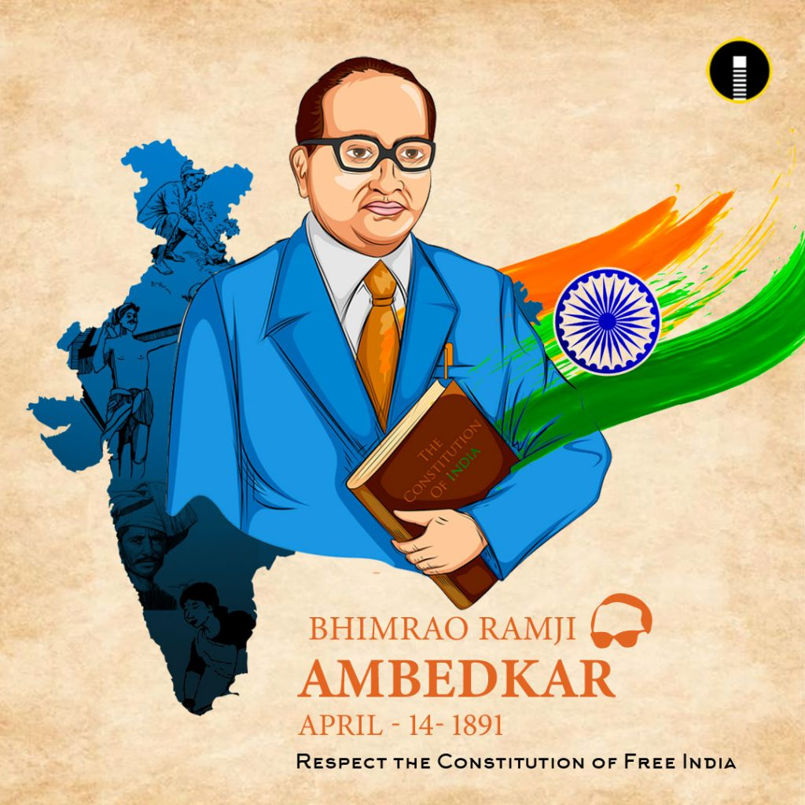

Dr. B.R. Ambedkar
Dr. Bhimrao Ramji Ambedkar was an Indian jurist, economist, and social reformer who inspired the Dalit Buddhist movement and campaigned against social discrimination.
- Studied at Columbia University and London School of Economics
- Chief Architect of the Indian Constitution
- First Law Minister of India
- Fought against caste discrimination
- Promoted equality and human rights